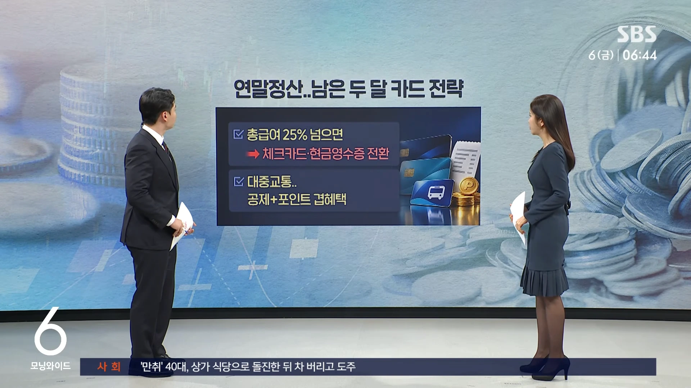
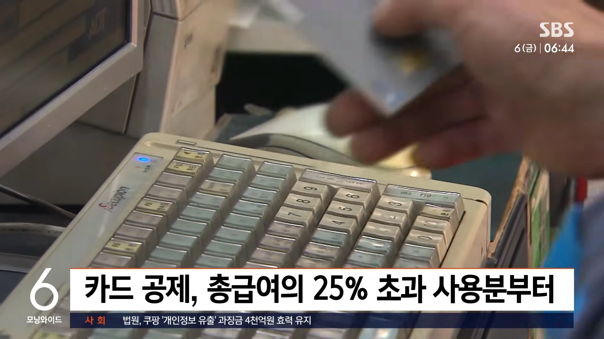
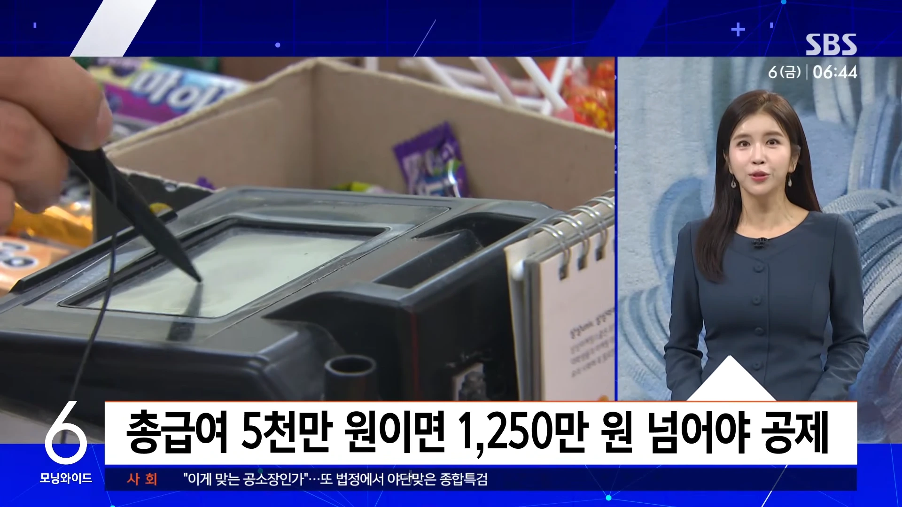
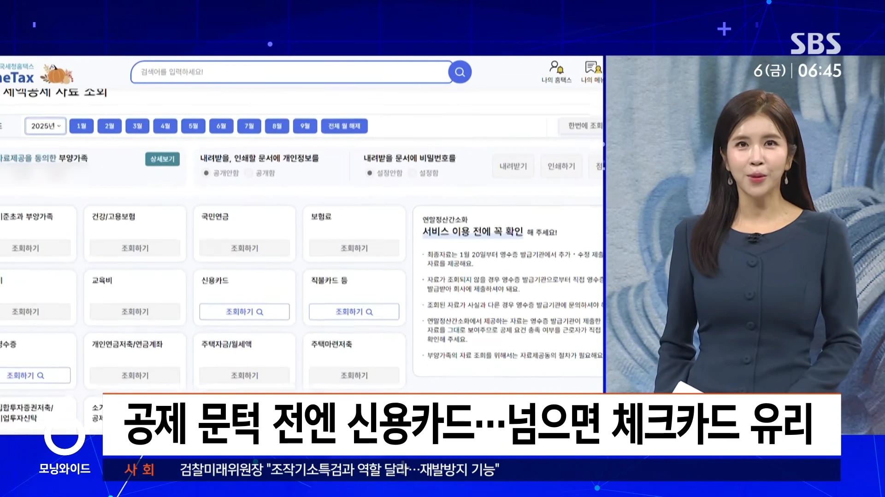
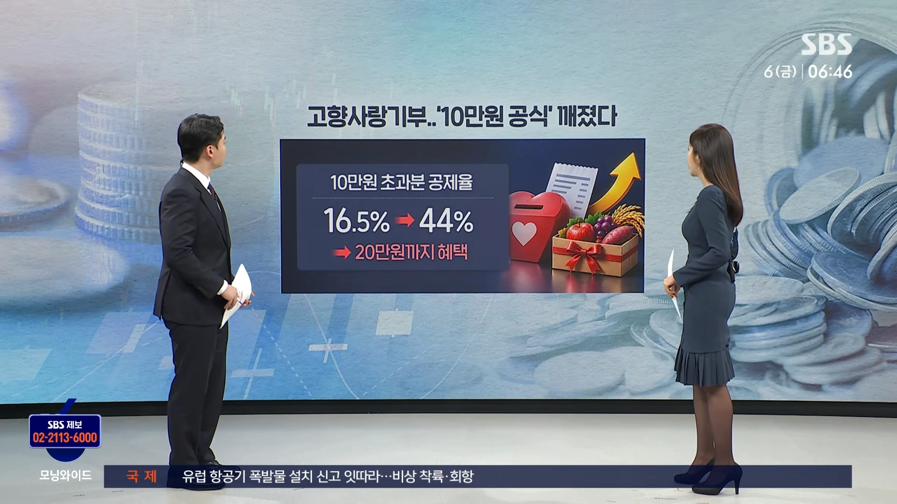
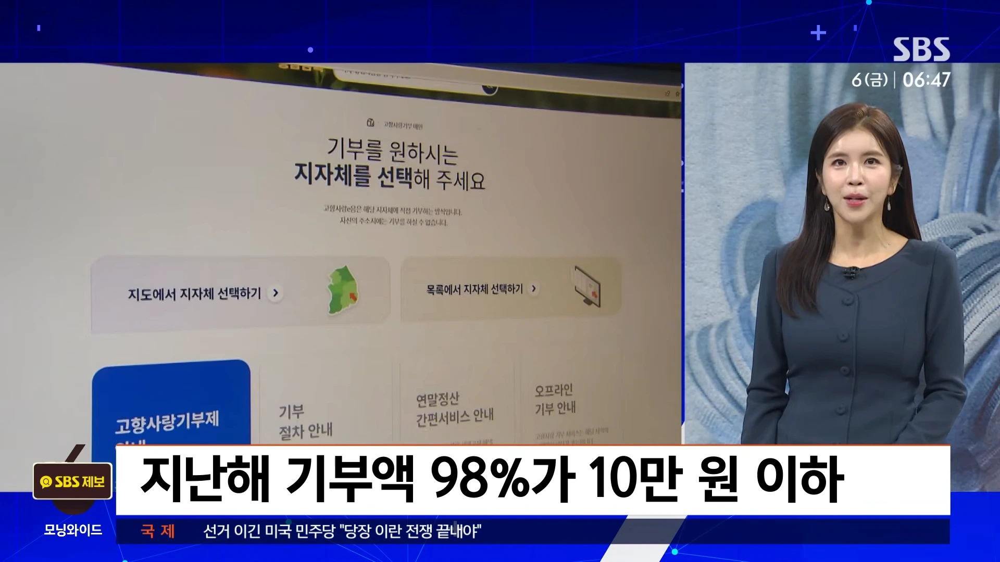
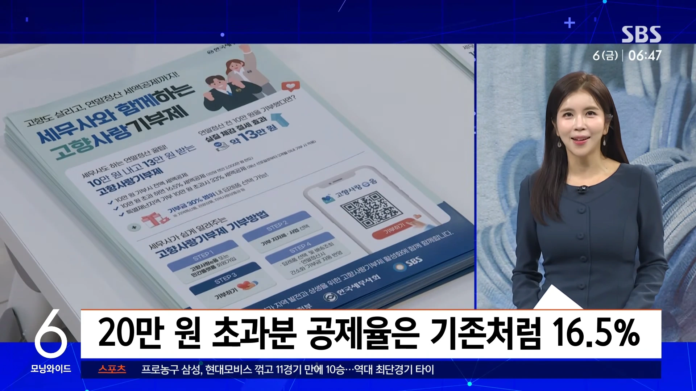
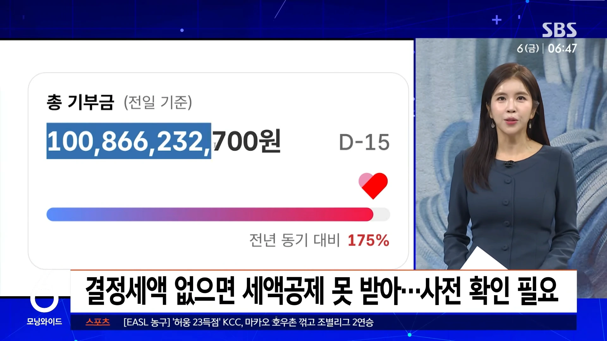
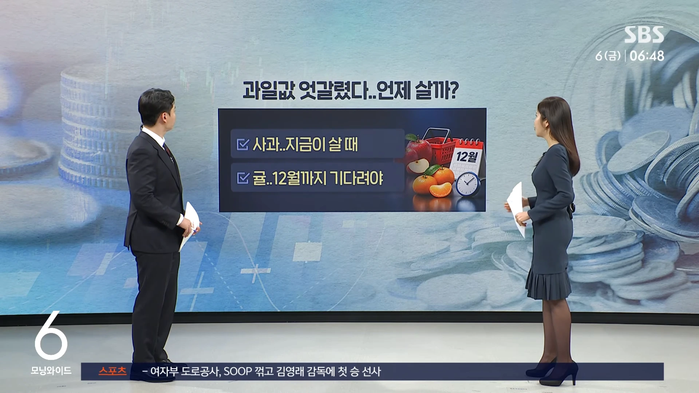
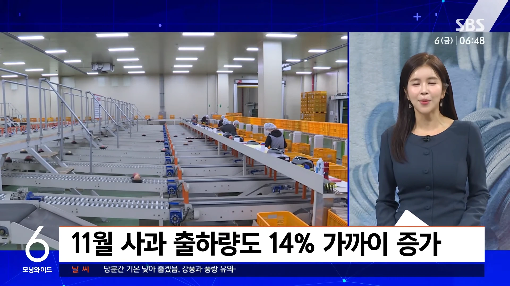
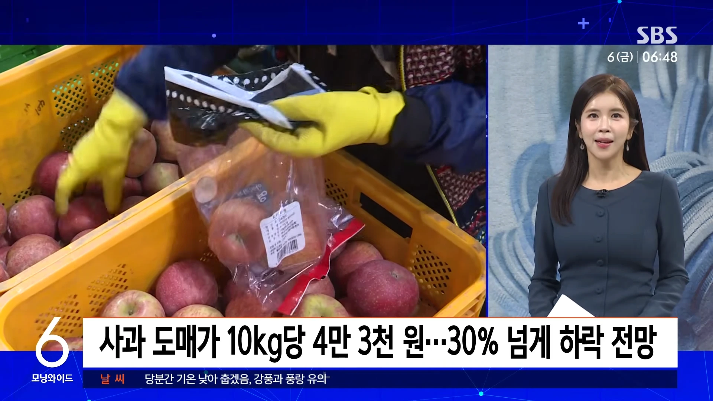
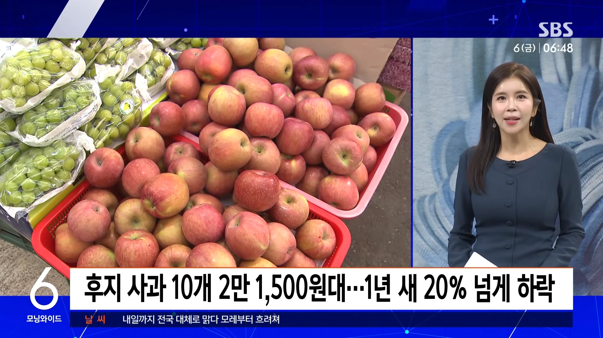
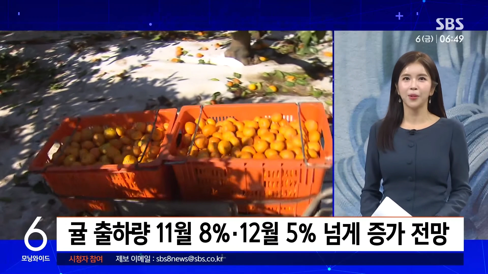
금요일 친절한 경제 한지연 기자 나와 있습니다. 한 기자 오늘(6일)은 연말정산 대비 요령이군요.
카드 사용에 대해서 좀 알아볼 텐데요.
총 급여의 25%를 넘게 쓰셨으면 체크카드와 현금영수증으로 전환하는 게 좋고요.
대중교통은 포인트 겹혜택까지 챙기시면 좋겠습니다.
카드 공제는 쓴 돈을 다 쳐주는 게 아니라 총 급여, 그러니까 대략 연봉의 4분의 1을 넘게 쓴 부분부터 해 주는데요.
총 급여 5천만 원 직장인이라면 1천250만 원이 문턱이고, 이걸 넘었는지는 홈택스 '연말정산 미리보기'에서 9월까지 쓴 카드 금액으로 보실 수 있습니다.
문턱까지는 어차피 공제가 없으니까, 혜택 좋은 신용카드를 쓰시는 게 이득이고요.
문턱을 넘은 다음부터는 체크카드나 현금영수증으로 갈아타시면 됩니다.
공제율이 신용카드는 15%인데, 체크카드랑 현금영수증은 30%, 두 배가 되거든요.
예를 들어서 아까 그 직장인이 쓰는 돈은 그대로 두고 남은 두 달 동안 한 달 150만 원씩만 체크카드로 바꿔 내도 세금이 7만 원 넘게 줄어듭니다.
전월 실적 조건 없이 적립해 주는 체크카드라면, 덤까지 챙기시는 거죠.
공제받는 금액에는 한도도 있는데요.
총 급여 7천만 원 이하면 기본 300만 원, 올해부터는 공제대상 자녀가 한 명이면 350만 원, 둘 이상이면 400만 원까지입니다.
총 급여 7천만 원이 넘으면 이것보다 조금 낮습니다.
이 기본 한도를 다 채우셨다면, 더 써도 공제가 안 늘어나니까 다시 혜택 좋은 신용카드로 돌아가셔도 되겠습니다.
공제가 더 쏠쏠한 곳도 있습니다.
버스, 지하철 같은 대중교통과 전통시장은 공제율이 40%인데, 교통비를 최대 20%까지 포인트로 돌려주는 카드도 있어서, 공제는 공제대로, 포인트는 포인트대로 받을 수 있습니다.
게다가 여긴 한도가 따로 있어서 기본 한도를 채운 뒤에도 최대 300만 원까지 더 공제됩니다.
다만 관리비, 통신요금, 세금, 그리고 해외에서 쓴 돈은 카드로 결제했어도 공제에서는 빠집니다.
고향사랑기부 10만 원 초과분 공제율이 44%까지 높아졌는데요.
20만 원까지 혜택을 볼 수 있습니다.
고향사랑기부, 지금 사는 곳 말고 고향이나 응원하고 싶은 지역에 기부하면 세금을 깎아주고 특산품이나 지역사랑 상품권 같은 답례품을 주는 제도죠.
지난해 기부의 98%가 10만 원 이하였습니다.
10만 원까지는 세금에서 전부 빼주니까 10만 원이 정답처럼 여겨졌던 거죠.
그런데 올해부터는 얘기가 달라졌습니다.
그 위 금액의 공제율이 16.5%에서 44%로 확 뛰었거든요.
20만 원을 내면 처음 10만 원은 전부, 그 위 10만 원에서는 4만 4천 원, 합쳐서 14만 4천 원이 세금으로 돌아오고 답례품도 기부액의 30%까지, 6만 원어치를 고를 수 있습니다.
20만 원을 넘는 부분은 예전처럼 16.5%라서 20만 원까지가 가장 쏠쏠한 구간입니다.
다만, 세금을 한 푼도 안 내는 분이라면 10만 원을 내고 최대 3만 원어치 답례품만 받게 되니까, 작년 원천징수 영수증에서 결정세액부터 확인해 보셔야겠고요.
또 12월 31일까지 기부한 것만 올해 공제에 들어갑니다.
마지막은 요즘 과일값 얘기네요.
사과는 지금이 살 때이고, 귤은 조금만 더 기다리셔야겠습니다.
작년 이맘때 사과 한 봉지 들었다가 가격 보고 슬쩍 내려놓으셨던 분들 많으셨죠.
올해는 사과값이 좀 친절해졌습니다.
심은 면적도 늘고 같은 밭에서 거두는 양도 늘면서 생산량이 지난해보다 11% 가까이 늘고, 이달 시장에 풀리는 물량도 14% 가까이 많아질 전망입니다.
그러다 보니 가락시장 도매가격이 10kg 한 상자에 4만 3천 원, 작년보다 30% 넘게 낮을 걸로 보이고요.
우리가 사는 값도 지난 3일 기준으로 후지 사과 10개에 2만 1천500원대, 1년 전보다 20% 넘게 쌉니다.
반면 귤은 사정이 좀 다릅니다.
올해는 9월부터 서늘한 날씨가 이어져서 귤이 잘 자랐고, 비가 적어 병충해도 줄면서 생산량이 6% 가까이 늘 전망입니다.
그런데 정작 우리가 사는 값은 귤 10개에 4천100원대, 작년보다 24% 넘게 비쌉니다.
아직 본격적으로 쏟아져 나오는 철이 아니어서인데요.
출하 물량도 이달 8%, 12월에는 5% 넘게 늘 전망입니다.
정부는 12월 들어서면 값이 많이 내려갈 걸로 보고 있는데요.
연말에는 과일값 부담이 좀 덜하겠습니다.
댓글
수집 당시 댓글 3개
땨뗘(봇) · 11.06 22:25:04
3dd · 11.06 22:26:27
키나루디안마기 · 11.06 22:56:55